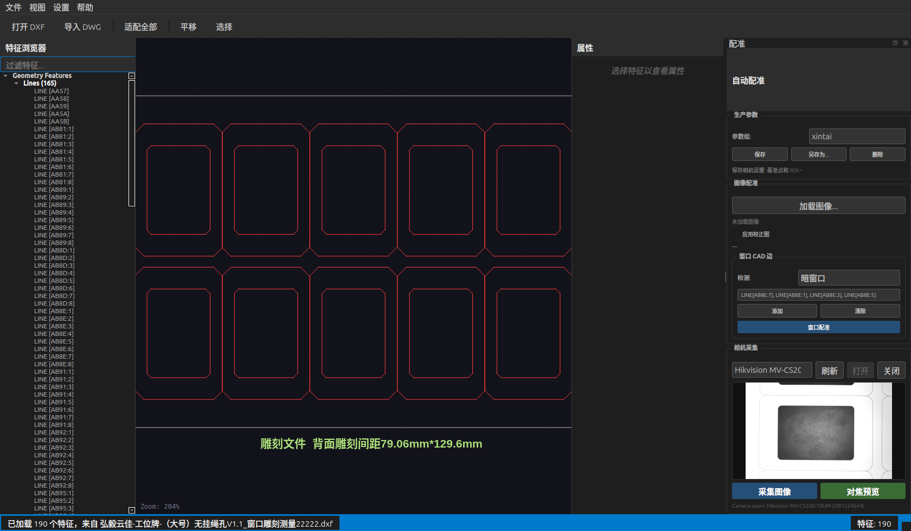
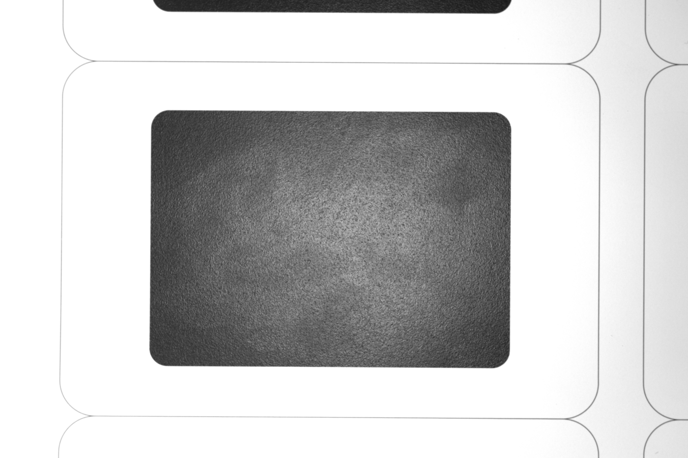
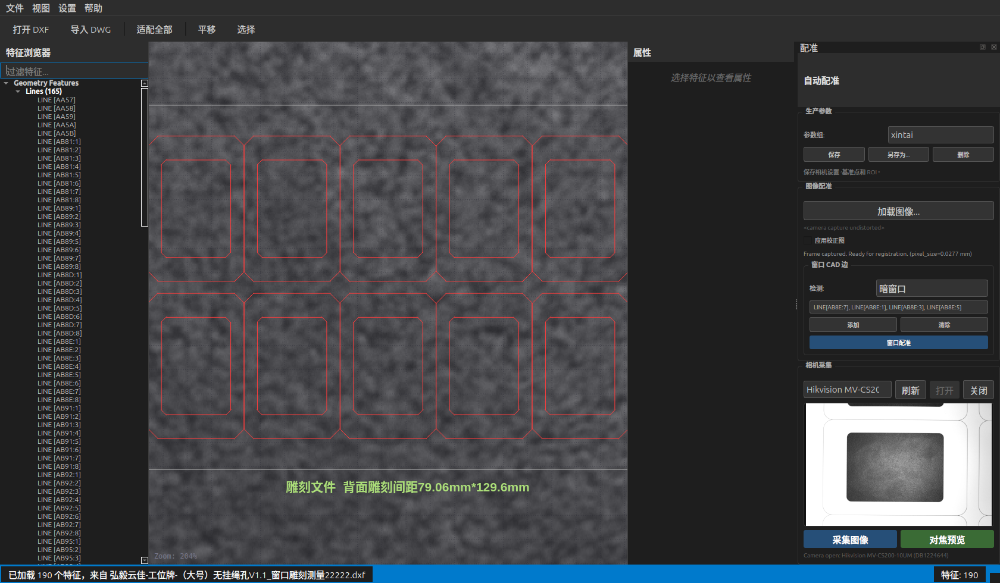
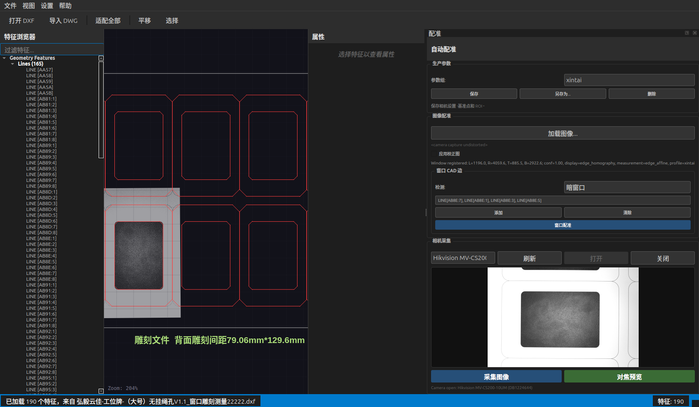
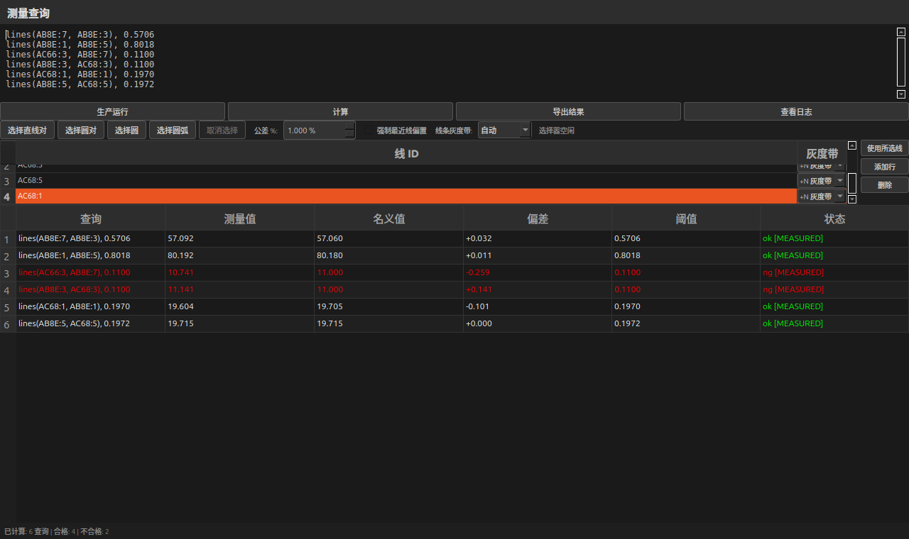
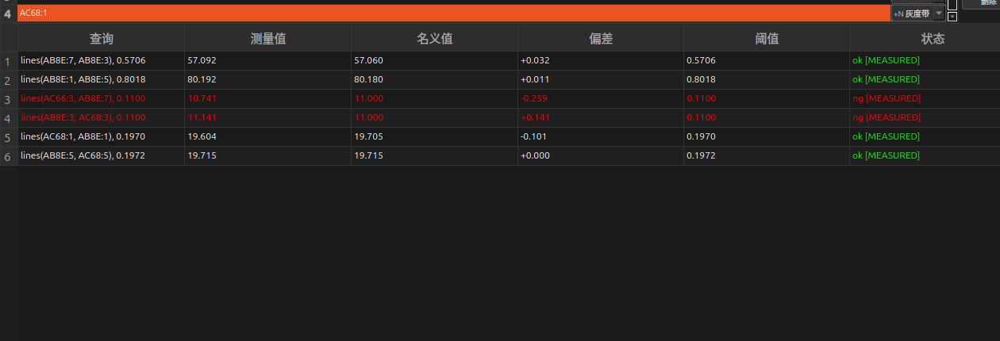
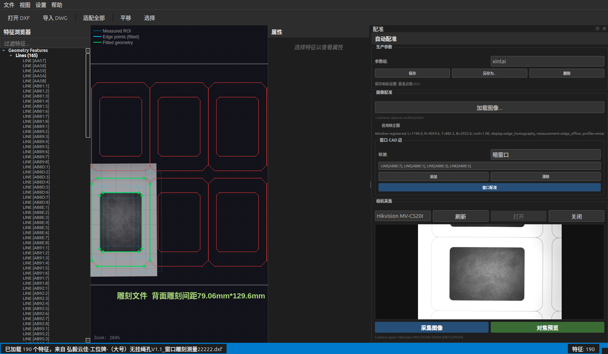
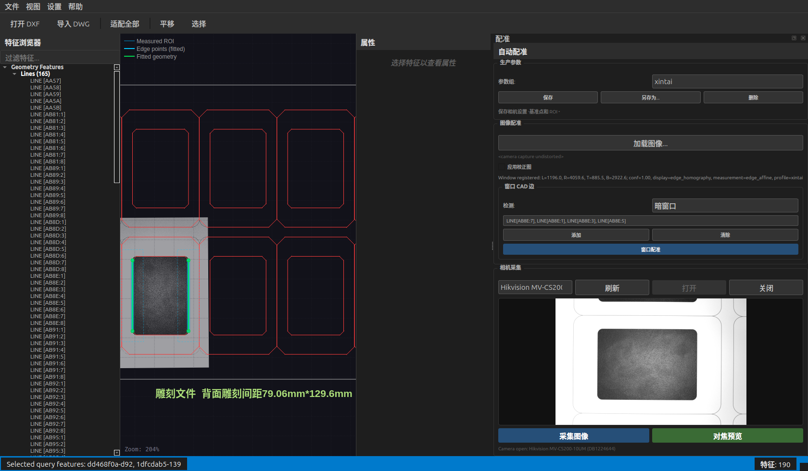
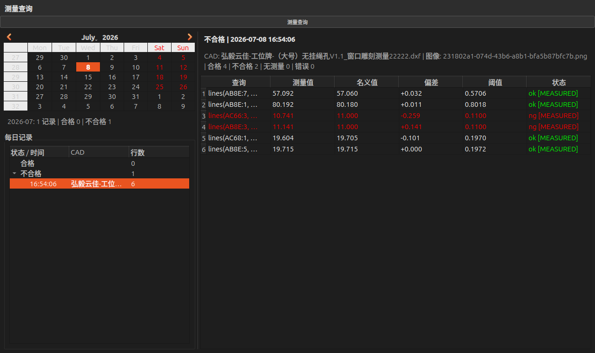

本文档基于 2026-07-08 实际运行的软件界面更新。截图保存在 docs/screenshots/。本次更新使用真实 Hikvision 相机实时采集图像、当前配置文件、以及 CAD 文件：
/home/hotcat/Downloads/cadrefs/cads/弘毅云佳-工位牌-（大号）无挂绳孔V1.1_窗口雕刻测量22222.dxf
本次实测流程：打开相机 → 采集当前帧 → 暗窗口 Window Register → 运行 Measurement Queries → 保存生产日志。实测像素尺寸为 0.027696345 mm/px，镜头校正已应用，Correction Map 开关为关闭状态，窗口注册使用 AB8E:7 / AB8E:1 / AB8E:3 / AB8E:5 四条窗口边。
主窗口包含菜单栏、工具栏、特征浏览器、CAD 画布、属性面板和状态栏。加载 DXF 后，左侧特征树显示 Lines、Circles、Text 等几何实体，CAD 画布显示图纸。
操作步骤：
打开 DXF。适配全部，让 CAD 图形完整进入视野。本次示例加载结果为 190 个特征：165 条线、24 个圆、1 个文字对象。

注意事项：
AB8E:3。适配全部。相机区域位于右侧 Registration 面板中的 Camera Capture。本次实测相机为 Hikvision MV-CS200-10UM。

操作步骤：
视图 → Registration Panel。Camera Capture 中选择相机。打开，确认预览区域出现实时图像。对焦预览。采集图像，当前帧会被送入 CAD 画布作为图像层。本次采集到的当前帧如下：

采集成功后，状态栏会显示图像已加载，Registration 面板中图像路径显示为相机采集。若已保存镜头标定，采集时会先执行 OpenCV 镜头去畸变，再进入注册和测量。

注意事项：
采集图像 按钮不可用，先确认相机已经打开。当前生产流程使用 Window Register。软件根据指定 CAD 窗口边在相机图像中寻找窗口边缘，计算图像到 CAD 的变换。显示可使用 homography 贴合窗口，测量使用 edge affine，避免投影变换影响尺寸测量。

本次注册配置：
| 项目 | 值 |
|---|---|
| 检测模式 | 暗窗口 |
| CAD 窗口边 | LINE[AB8E:7], LINE[AB8E:1], LINE[AB8E:3], LINE[AB8E:5] |
| 注册置信度 | 0.9963 |
| 显示模型 | edge_homography |
| 测量模型 | edge_affine |
| Correction Map | 关闭 |
操作步骤：
窗口 CAD 边 区域选择检测模式：暗窗口、亮窗口或自动。窗口配准。计算 或 生产运行。注意事项：
Measurement Queries 用于编辑测量表达式、运行测量、查看结果。查询文本现在保存在主配置文件中，会自动保存；界面中不再使用单独的查询文件 Load/Save。

当前配置中的查询为：
lines(AB8E:7, AB8E:3), 0.5706
lines(AB8E:1, AB8E:5), 0.8018
lines(AC66:3, AB8E:7), 0.1100
lines(AB8E:3, AC68:3), 0.1100
lines(AC68:1, AB8E:1), 0.1970
lines(AB8E:5, AC68:5), 0.1972
支持的表达式：
| 表达式 | 用途 |
|---|---|
lines(ID1, ID2), threshold |
两条线之间的距离 |
circles(ID1, ID2), threshold |
两个圆心之间的距离 |
circle(ID), threshold |
圆半径 |
arcs(ID), threshold |
圆弧半径 |
本次当前帧实测结果：
| 查询 | 测量值 | 名义值 | 偏差 | 阈值 | 状态 |
|---|---|---|---|---|---|
lines(AB8E:7, AB8E:3) |
57.0922 | 57.0600 | +0.0322 | 0.5706 | OK |
lines(AB8E:1, AB8E:5) |
80.1915 | 80.1800 | +0.0115 | 0.8018 | OK |
lines(AC66:3, AB8E:7) |
10.7413 | 11.0000 | -0.2587 | 0.1100 | NG |
lines(AB8E:3, AC68:3) |
11.1410 | 11.0000 | +0.1410 | 0.1100 | NG |
lines(AC68:1, AB8E:1) |
19.6038 | 19.7048 | -0.1010 | 0.1970 | OK |
lines(AB8E:5, AC68:5) |
19.7155 | 19.7152 | +0.0003 | 0.1972 | OK |

查询区常用控件：
生产运行：采集相机图像、执行窗口注册、计算查询并保存生产日志。计算：使用当前已加载图像和当前注册结果重新计算查询。导出结果：将当前结果导出为文本或 CSV。查看日志：进入生产日志查看器。选择直线对、选择圆对、选择圆、选择圆弧：通过点击 CAD 特征自动生成查询。强制最近线偏置：对印刷线/窗口线组合，优先使用靠近窗口边的那一侧印刷灰度带。线条灰度带：全局选择 Auto、+N band、-N band。AC66:3 使用 -N，AC68:3 / AC68:5 / AC68:1 使用 +N。注意事项：
no_measurement[NONE]，表示图像测量失败，不会回退到 CAD 名义值。[MEASURED] 表示结果来自图像拟合，而不是直接使用 CAD。点击结果表中的任一行，主画布会高亮对应 CAD 特征，并显示图像拟合得到的测量几何。绿色拟合线/圆应贴合真实图像边缘。


复查方法：
+N/-N。生产运行 会将当前 CAD、采集图像、注册参数、标定信息、测量查询和结果写入生产日志。日志按日期组织，并按合格/不合格分类。

本次日志记录：
操作步骤：
查看日志。相机标定位于 设置 → Camera Calibration...。当前系统通常需要：
当前经验结论：
使用建议：
处理顺序：
刷新。打开。生产运行 失败在窗口注册阶段常见原因：
处理方法：
采集图像。窗口配准。印刷线不是高精度加工基准，可能有收缩、扩张、油墨厚度和灰度带双边问题。处理顺序：
强制最近线偏置。Measurement Queries 的文本保存在主配置文件中。正常情况下编辑后会自动保存，关闭程序时也会再次写入。界面不再提供单独的查询文件 Load/Save。
no_measurement[NONE]这表示图像中没有可靠拟合到对应特征。软件不会用 CAD 名义值冒充测量值。需要检查图像、注册、查询 ID、灰度带选择和边缘质量。
| 文件 | 说明 |
|---|---|
| 01_main_window.png | 主窗口和 Hongyi DXF |
| 03_cad_canvas.png | CAD 画布 |
| 04_registration_camera_open.png | 相机打开后的注册面板 |
| 05_live_capture_frame.png | 当前实时采集帧 |
| 06_frame_captured.png | 图像采集后 |
| 07_window_registered.png | Window Register 完成 |
| 08_measurement_queries.png | Measurement Queries 当前结果 |
| 08a_measurement_results_crop.png | 测量结果局部 |
| 09_measurement_overlay_canvas.png | 测量叠加 |
| 10_selected_measurement_overlay.png | 选中测量行后的叠加 |
| 11_production_log_viewer.png | 生产日志查看器 |
{kind=link}
{kind=link}
{kind=link}
{kind=link}
{kind=link}
{kind=link}
{kind=link}
{kind=link}
{kind=link}